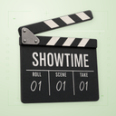
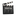
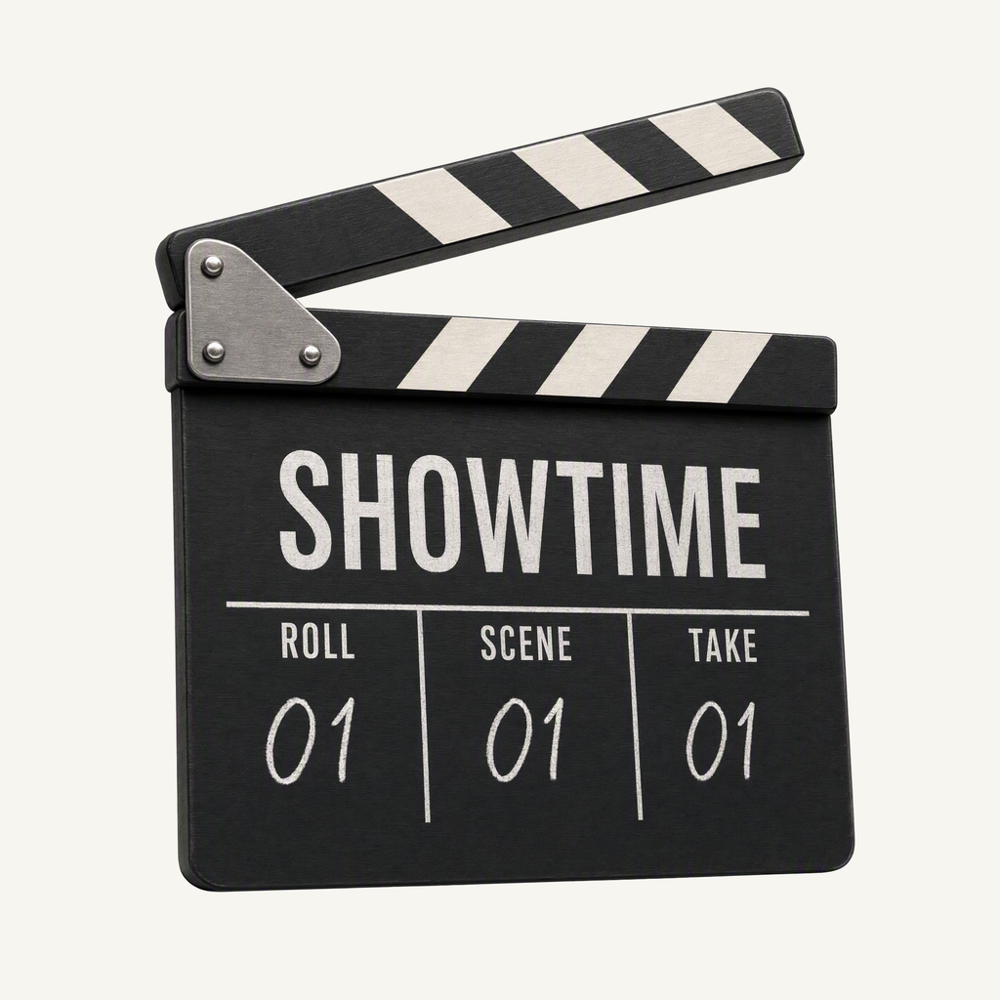
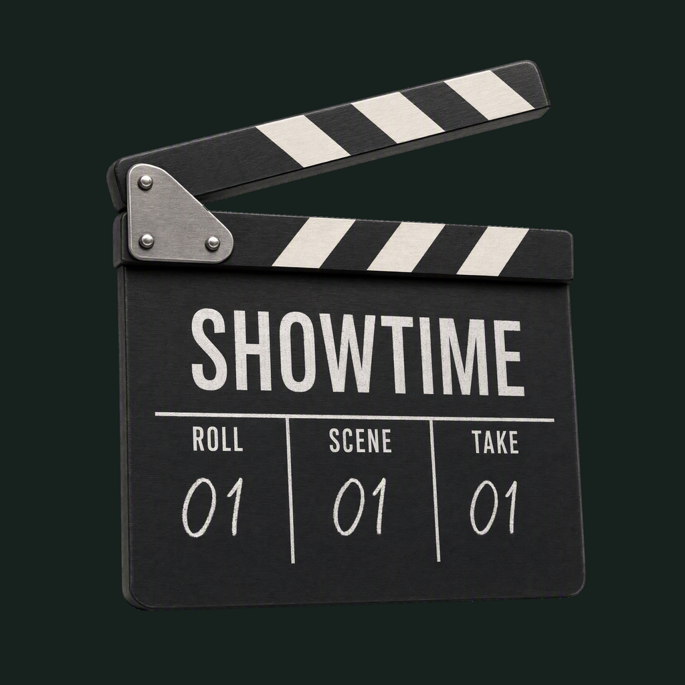

01 / Composition
Just before the clap
A raised upper stick and broad, mostly frontal slate form one compact object. The complete hinge and corners remain visible, with 178.5 px of clearance against the final rounded outline.
Physical-object family · Refined identity
Direct the page. Record the take.
Selected artwork · finishing 03
Native 2048 × 2048 · source adoption reported

01 / Composition
A raised upper stick and broad, mostly frontal slate form one compact object. The complete hinge and corners remain visible, with 178.5 px of clearance against the final rounded outline.
02 / Drawing
Matte charcoal, ivory diagonal inlays and brushed silver preserve the classic physical slate. SHOWTIME and ROLL / SCENE / TAKE markings belong to the object; every fully opaque extracted native pixel retains its original RGB.
03 / Presentation
Sparse film-gate brackets, perforation marks and editing cues sit on pale sage paper. Green stays in the independent background and soft shadows; the small interface mark uses the transparent board.
Presentation tiles at 128/64 px; transparent artwork for small app and browser marks.


The title and three production fields read at large sizes. At 32/24/16 px, the lifted striped stick and slate silhouette carry recognition; the small field labels and material grain merge. Sidebar and browser specimens show identity scale; Showtime itself is a native macOS app.
Green presentation colors stay separate from the black-and-white physical artwork.
Select a swatch to copy its hex value. Artwork samples come from the exact native generation. The inspected application accent is #4A8234; application tokens and designed presentation colors have separate evidence in palette.json.
One transparent foreground, checked on two contrasting backgrounds.


Azure Foundry · gpt-image-2 · native 2048 × 2048 · finishing 03
Loading study text…
The two images appear in the exact submitted order. They guide material and framing only. The rejected green clapperboard is preserved in study 01 and was not submitted as an identity target.


{kind=link}
{kind=link}
{kind=link}
{kind=link}
{kind=link}